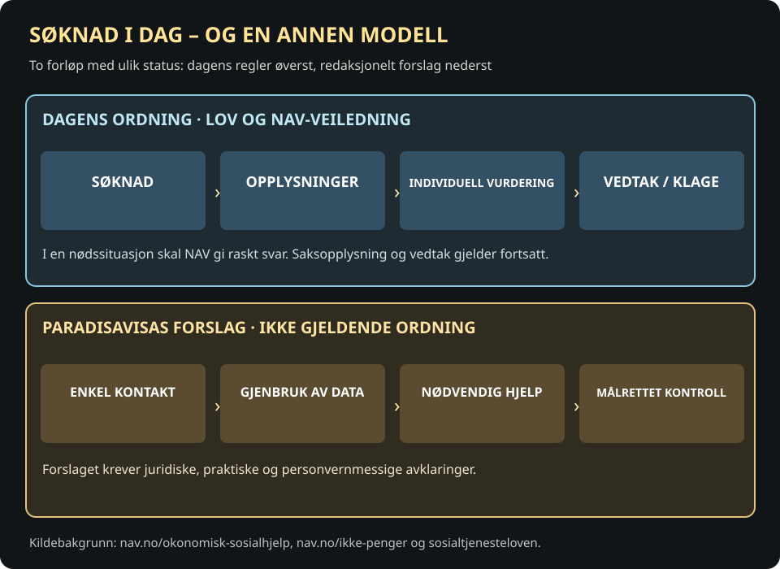
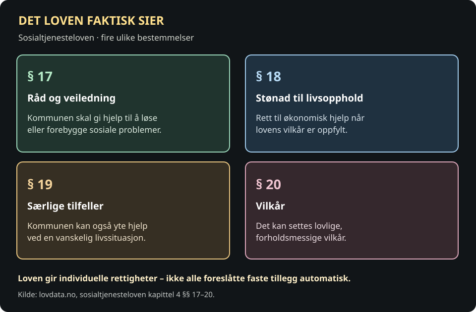

Når noen ber om hjelp, skal de få hjelp
Vi lever i et samfunn som har ressurser til å sørge for at alle får dekket sine grunnleggende behov. Det bør også være utgangspunktet for hvordan NAV fungerer.
Når noen ber om økonomisk hjelp, skal de få hjelp. De skal ikke måtte kjenne til alle støtteordningene, fylle ut en rekke søknader eller gjentatte ganger dokumentere hvorfor de trenger penger.
Det bør være tilstrekkelig å opplyse om hvor mye man har på konto, faste inntekter og nødvendige utgifter. NAV skal deretter selv finne ut hva personen har rett på, og sørge for at vedkommende får all støtten som skal gis.
Det er NAV som skal kjenne regelverket, ikke brukerne.
Rett og forslag: Alle har rett til å søke om økonomisk sosialhjelp og få individuell vurdering. Men dagens system gir ikke automatisk den foreslåtte støtten uten søknad. Etter sosialtjenesteloven § 18 har den som ikke kan sørge for sitt livsopphold, og oppfyller vilkårene, rett til økonomisk stønad. Den automatiserte modellen under er Paradisavisas standpunkt, ikke gjeldende NAV-praksis.

To måter å organisere økonomisk hjelp på


Vi bør organisere samfunnet slik at behovet for tvang, overvåkning, trusler og økonomiske sanksjoner blir så lite som mulig. Mennesker som trenger hjelp, skal ikke møtes som om de i utgangspunktet er mistenkelige. Vi er et generøst samfunn, og det skal også komme til uttrykk i måten vi behandler hverandre på.
For mange innebærer kontakten med NAV stor nervøsitet. De vet ikke hva de får, når pengene kommer, eller om en saksbehandler vil godkjenne det de trenger. Denne usikkerheten kan prege hele hverdagen, særlig for mennesker som allerede sliter med sykdom, dårlig økonomi eller psykiske belastninger.
Dette påvirker også de ansatte. Det er krevende å ha ansvar for avgjørelser som kan få så store konsekvenser for andre menneskers liv. Med automatiske beregninger og faste rettigheter trenger ikke ansatte å sitte med den samme personlige belastningen ved hver enkelt utbetaling.
Hva gir sosialtjenesteloven rett til?


NAV bør i størst mulig grad beregne og utbetale støtten automatisk. Nødvendig kontroll kan skje i etterkant, og bare når det finnes et reelt behov for den. Opplysninger som allerede finnes i offentlige registre, bør ikke kreves inn på nytt fra brukerne.
Fire avgjørelser som må tas i en ny ordning
Dette er eksempler på krav til å utvikle Paradisavisas modell. Det er ikke en automatisk ytelseskalkulator eller en bindende vurdering av rettigheter.
Kilder om dagens ordning: NAVs veiledning og NAVs rundskriv. Alternativene over er redaksjonelle forslag.
Gi først, spør siden. Det betyr ikke at opplysninger aldri skal kontrolleres, men at mennesker ikke skal måtte gjennom omfattende kontroll for å få dekket grunnleggende behov.
Har man allerede rett til å få økonomisk hjelp i en nødssituasjon?
Du har rett til å søke og få situasjonen vurdert raskt. NAV oppgir at nødhjelp kan dekke helt nødvendige utgifter i en kort periode, for eksempel mat og utgifter som må betales for å unngå at strømmen stenges. Det er ikke det samme som at enhver ønsket utbetaling skjer automatisk uten dokumentasjon eller vurdering.
Ved akutt behov opplyser NAV at du bør kontakte NAV-kontoret i kommunen der du oppholder deg. En vanlig søknad gir skriftlig vedtak og mulighet til å klage. Paradisavisas forslag om «gi først, spør siden» krever endringer og klare rettssikkerhetsregler.
Langtidsmottakere av sosialhjelp og uføretrygdede bør få faste ekstrautbetalinger til ferie, jul, transport, klær, husholdningsartikler, møbler og hvitevarer. Nødvendig strøm og oppvarming skal dekkes. Dette er vanlige behov som oppstår gjennom et år, og som ikke skal kreve nye søknader hver gang.
Det er en politisk målsetting, ikke en nåværende generell ytelse: Faste tillegg til ferie, jul, transport, møbler og hvitevarer finnes ikke som én automatisk nasjonal rett for alle sosialhjelpsmottakere og uføretrygdede slik kommentaren foreslår. Kommunen vurderer økonomisk sosialhjelp ut fra livssituasjon og konkrete behov. NAV: økonomisk sosialhjelp · Lovdata: §§ 18–19.
I et samfunn der grunnleggende behov dekkes gratis for dem som trenger det, blir også mye av dagens behovsprøving og saksbehandling overflødig.
Når basissystemet er på plass, vil mange av sakene som i dag havner hos NAV, rett og slett falle bort. Folk vil ikke lenger behøve å søke om hjelp til hver eneste nødvendige utgift, fordi disse behovene allerede er ivaretatt.
Det vil spare mye arbeid med søknader, innhenting av dokumentasjon, telefoner, purringer, klager, nye vurderinger og akutte nødhjelpssaker. Ansatte kan konsentrere seg om situasjoner som faktisk krever individuell hjelp, fremfor å bruke tiden på å kontrollere ordinære og forutsigbare behov.
Samtidig vil mange mennesker slippe den psykiske belastningen ved stadig å måtte forklare, dokumentere og forsvare sin økonomiske situasjon. Økonomisk trygghet gir mennesker større mulighet til å ta vare på helsen sin, familien og sitt eget liv.
Vi bør ikke innrette hjelpen etter en forestilling om at mennesker helst vil utnytte systemet. De aller fleste ønsker å klare seg selv, og når de trenger hjelp, skal det være enkelt å få den.
Et godt samfunn trenger ikke gjøre mennesker redde for å be om hjelp. Det trenger heller ikke kontrollere alle sider av menneskers privatøkonomi for å sikre at grunnleggende behov blir dekket.
Når samfunnet sørger for at alle har det nødvendige, reduseres også behovet for kontroll, sanksjoner og stadig nye økonomiske vurderinger.
NAVs oppgave bør være å sørge for at rettighetene blir oppfylt. Mennesker skal få den hjelpen de trenger, med minst mulig innblanding i privatlivet og størst mulig frihet til å leve sine egne liv.
Hva bør endres først i møtet med NAV?
Frivillig leserspørsmål, ikke en representativ undersøkelse. Bare ditt eget svar lagres lokalt. Ingen fellestall eller prosenter vises.
Avstemningen trenger JavaScript og sender ikke svaret til en server.
Du valgte:
Dette viser bare ditt eget svar.
Kilder og hva som er kommentar
- NAV: økonomisk sosialhjelp – søknad, dokumentasjon, individuell behandling, vedtaksbrev og klage.
- NAV: Har ikke penger til mat, bolig eller andre utgifter – nødhjelp og rask behandling.
- Sosialtjenesteloven §§ 17–20 – veiledning, stønad, særskilte tilfeller og vilkår.
- NAV: Rundskriv og tolkning av sosialtjenesteloven – skillet mellom dokumentasjonskrav og vilkår.
Dette er en meningsartikkel. Paradisavisas forslag om en langt mer automatisk og tillitsbasert velferdsordning er et normativt standpunkt. Den er ikke en veiledning om hvilke enkeltytelser en leser faktisk har krav på.